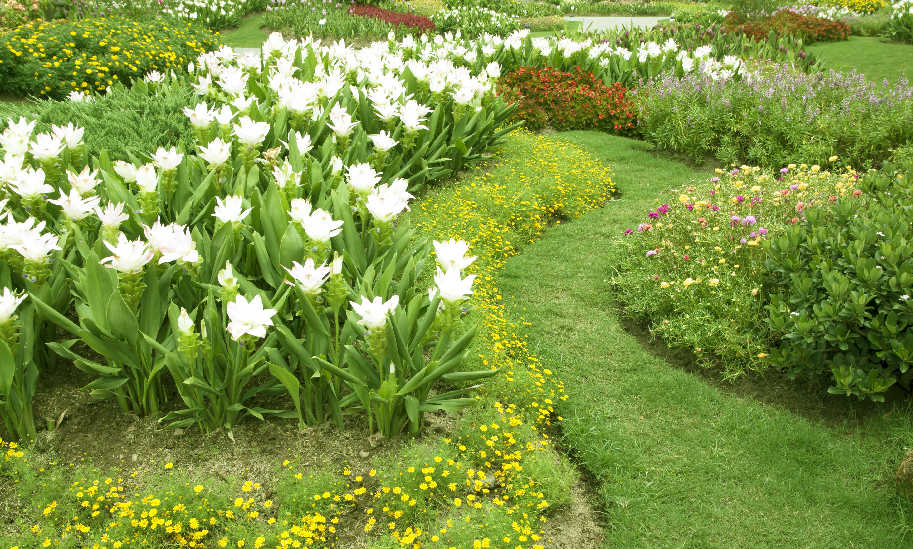

We'd be happy to share our expertise and explore potential solutions to address your
inquiries.
LET'S EMBARK ON YOUR DREAM PROJECT
Strategies For Optimizing Small Garden Areas
O VERCARDO VERCARDO VERCARDO
A Quintessential Guide to Garden Space Management

In this guide, we at Vercardo will discuss the ability of unlocking the essence of a small garden space. As such, we’ve nicknamed this piece “A Quintessential Guide to Garden Space Management”
In the delicate dance of crafting a small garden oasis, every element holds the potential to elevate the sensory experience and transform mere space into a haven of tranquility. Whether you are a seasoned horticultural enthusiast or an aspiring green-thumb, mastering the art of small garden design demands finesse and a keen eye for detail. Here, we present our top five tips, meticulously curated to inspire and guide you on your botanical journey.
TIP #1. Engage the Senses: Elevate your garden sanctuary by selecting one or two senses to serve as the cornerstone of its allure. Embrace the ethereal melody of wind chimes, the gentle caress of velvety plant textures, or the subtle embrace of fragrant blooms. By immersing yourself in these sensory delights, you invite a harmonious connection with nature, anchoring yourself firmly within the confines of your verdant retreat. Opt for bird- and pollinator-friendly flora to further enrich your sensory experience, fostering moments of mindfulness as you observe the graceful dance of bees, butterflies, and avian visitors.
TIP #2. Enchanting Water Features: Transform your small garden into a sanctuary of serenity with the enchanting allure of a water feature. The mesmerizing cadence of flowing water not only captivates the senses but also serves as a symphonic shield against the clamor of urban life. Whether it's a babbling brook, a cascading fountain, or a tranquil pond, the presence of water bestows a sense of calm, inviting contemplation and reflection within the confines of your intimate green space.
TIP #3. Elevate with Verticality: Embrace the vertical plane as a canvas for botanical expression, drawing the gaze heavenward to behold a symphony of sights and textures. Harness the power of height with towering fences, captivating artworks, or elegant sculptural specimens, such as slender bamboo swaying gracefully in the breeze. By incorporating vertical focal points, you not only maximize visual impact but also create the illusion of spaciousness, transcending the confines of your diminutive garden oasis.
TIP #4. Harmony in Simplicity: Embrace the ethos of simplicity by curating a harmonious plant palette characterized by subtle contrasts and lush foliage textures. Eschew the temptation of a riotous cacophony of colors, opting instead for a refined selection of botanical specimens that coalesce seamlessly to create a unified tapestry of verdant beauty. By simplifying your plant selection, you elevate the visual coherence of your garden space, imbuing it with a sense of understated elegance and timeless charm.
TIP #5. Prudent Plant Selection: Exercise discernment in your choice of botanical companions, opting for low-maintenance specimens that exhibit impeccable manners and a penchant for restrained growth. While the allure of majestic flora may tempt you, it is imperative to ensure that each plant finds its rightful place within the confines of your garden sanctuary, harmonizing with its surroundings without encroaching upon precious space. Strike a delicate balance between grandeur and restraint, allowing your chosen specimens to flourish in symbiotic equilibrium within your intimate botanical haven.
O VERCARDO VERCARDO VERCARDO
To Conclude
In the pursuit of small garden perfection, each tip serves as a beacon of inspiration, guiding you towards the realization of your verdant vision. With a judicious blend of sensory engagement, artistic expression, and botanical wisdom, you can transform even the most modest of garden spaces into a resplendent sanctuary of natural beauty and sublime tranquility. Embrace the artistry of small garden design, and unlock the boundless potential that lies within the confines of your verdant canvas.
COLLABORATE WITH VERCARDO – BRING YOUR VISION TO LIFE
We're passionate about transforming ideas into thriving landscapes, functional buildings, and flourishing horticultural spaces. We don't just offer services; we become your trusted advisor, sharing insights, suggesting creative options, and answering your questions every step of the way.